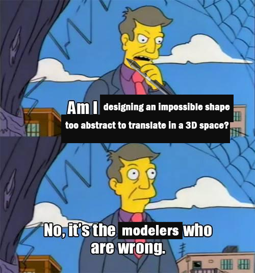
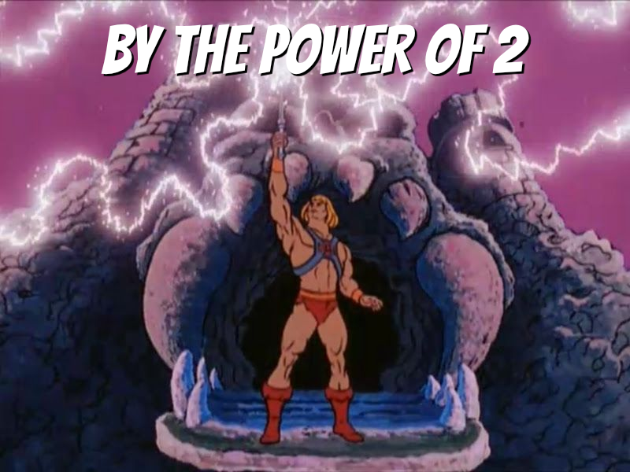

YOU ARE GOOD AT DRAWING,
NOW WHAT? – ✨
The technical skills of a game artist.
Casilda de Zulueta | gatdesoia.es/talks/tech-in-art
Baltic Dev Days | 1st-2nd June 2023
WHO AM I?
- Casilda de Zulueta (Casi).
- Freelancer:
- Technical artist.
- Animator.
- Indie game developer.
- Animation teacher.
- #FemDevsMeetup üíö co-organizer.

Ask me for stickers later.
ACADEMIC BACKGROUND

The first and last religious painting I have ever made.
- Audiovisual Communication B.Soc.Sc. üìº
- Universitat Politècnica de València.
- Erasmus exchange ✈️
- Köln International School of Design.
- Game Development & Research M.A. üëæ
- Cologne Game Lab.
PROFESSIONAL BACKGROUND
- Small student gigs:
- Many different roles.
- Lowest pay, or no pay at all.
- Full-time employee:
- 3D artist (generalist).
- Some PR work.
- Freelancer:
- First as a 3D artist.
- Then specialized.
- Dayrate +50 EUR every year.
- Lecturer:
- Private pays worse than public.

Enclosed Encounter (under development). Fantastic Foe.
MAKING THINGS FOR THE SAKE OF IT
I made ten of these.
- 3D art.
- Illustration.
- Video.
- Web design.
- Video games.
When left alone, I only make opressive and depressing games. Maybe it's the weather.


üåπüåπüåπüåπüåπüåπüåπüåπüåπüåπüåπüåπüåπ
gatdesoia.itch.io/13-rosas


THE PURPOSE OF
THIS TALK
- To point at the major technical aspects of game art...
- ... and make you consider being methodological in your artistic processes.
- To remind you that your value as a person does not depend on your productivity, that you deserve to rest and make things for fun, and that crunch is utter s***.
QUESTION #1:
WHAT KIND OF ARTIST ARE YOU?
- Concept.
- 2D.
- 3D.
- UI.
- Other.
- Not interested.
THE PURPOSE OF
YOUR WORK
- To communicate with the player.
- To communicate with the machine.
THE *ART* IS FOR AN AUDIENCE TO FIND MEANING
- It is appealing.
- It is disgusting.
- It has spikes so I know I'll get hurt if I enter its collision zone.
- It is yellow so I know I can go that way/there is some hidden treasure/I can break the crate and get some ammo.
Mirror's Edge (2008) DICE.
THE ASSET IS FOR A MACHINE TO INTERPRET (RENDER)
- The target device will constrain the polycount, atlas size, available rendering effects, color space.
- POV and screen size restricts level of detail.
- The bigger your files, the more space the game will occupy.
- You are responsible for your asset.
League of Legends (2009-2023) Riot Games.
ASK YOURSELF:
WHAT AM I MAKING THIS FOR?
- I'm making this chair so players can sit on it.
- I'm reusing the material for the matching table.
- I'm making the seat height universal for this game.
- I'm putting the pivot point at a constant distance from the front.
- I'm keeping the polycount extremely low so there can be 100 chairs on screen in a phone released 7 years ago.

This IS a chair.
THE TECH
BEHIND
THE ART
NAMING CONVENTIONS?
- chair_FINAL.fbx
- chair_FINAL-02.fbx
- Cube.007
- assets-34.blend
- wood.png
NAMING CONVENTIONS
- Chair 03.fbx
- Chair 03
- Furniture.blend
- Wood 07.png
- SM_Chair_03.fbx
- SM_Chair_03
- SM_Furniture_01.blend
- D_Wood_07.png
- English as development language.
- Recommended Asset Naming Conventions (Unreal Engine).
FOLDER STRUCTURES?
- Animations
- Character
- props
- Assets
- Character
- Animation
- Textures
- New Folder
- texture
FOLDER STRUCTURES
- Visuals
- Characters
- Animations
- NPCs
- Materials
- Textures
- Materials
- Player
- Materials
- Textures
- Materials
- Characters
- Environment
- Architecture
- Materials
- Textures
- Props
- Materials
- Textures
- Terrain
- Materials
- Textures
- UI
- Materials
- Textures
- Materials
ASSET LIST
| Asset | Working File | Type | Material |
|---|---|---|---|
| SM_Chair_01 | SM_Furniture_01 | seat | M_Wood_02 |
| SM_Chair_02 | SM_Furniture_01 | seat | M_Wood_03 |
| SM_Chair_03 | SM_Furniture_01 | seat | M_Wood_07 |
STORAGE IN THE CLOUD
- Edit files (.blend, .ma, .psd, .afdesign, .spp).
- Both local and cloud files are synced.
- Files that you don't use are not occupying space in your local disk.
- All modifications are retrievable in the file history, up to a certain point in time (like 30 days).
- Google Drive, NextCloud, OneDrive, Dropbox, Sync, OwnCloud...
LEARN THE BASICS OF VERSION CONTROL
- Project files (anything that you put in engine).
- Save file is local.
- Committed file is in the cloud.
- All commits are retrievable, no matter how far in time.
- COMMIT / PULL / PUSH
- Github Desktop, Sourcetree, Plastic SCM...
PIPELINE

CONCEPT ART
CONCEPT ART
- Number your concepts:
- "I like #3, but make it rounder like #7."
- Name your layers and groups:
- Ah, yes, Ebene 24, that's what I was looking for.
- Keep proportions feasible all views.

CONCEPT ART
CONCEPT ART
- Using references is mandatory:
- Creativity comes from ensambling and restructuring your understanding of how things work.
- Without references, stereotypes and unconscious biases take over.

Blasphemous (2019) The Game Kitchen.
CHARACTER CONCEPT ART
- A character's gotta move:
- Do the joints make sense?
- Can they bend knees or elbows with that piece of armour?
- Concept extreme face and body expressions.
PROPS & ENVIRONMENT CONCEPT ART
- Learn technical drawing.
- Don't fear "cheating". Use all the tools at your disposal:
- Blockout environments in Blender, place a camera and trace on top of a render.
- In principle, "AI" images don't help speed up good concept art and are full of biases.
2D ART
RESOLUTION
- All images must have a size of power of 2:
- 2, 4, 8, 16, 32, 64, 128, 256, 512, 1024, 2048, 4096, 8192
- They don't have to be square:
- E.g.: 128 x 32, 256 x 16

RESOLUTION
- It can be an individual asset...
- ... or a collection of assets arranged into an atlas.
- You may have heard of trim sheets.

...
RESOLUTION
- It has to be big enough to not scale up in game.
- Otherwise the image blurs*.
- It has to be small enough to not eat up resources rendering.
- * Pixel art has the advantage of storing tiny assets.
REUSABILITY

Super Mario Bros. (1985) Nintendo.
3D ART
MODELING
SCALE

Final Fantasy XV (2016) Square Enix.

Spyro the Dragon (1998) Insomniac Games.
SCALE
- The problem with tiny triangles:
- The computer still has to calculate the position of all those triangles, just for a single pixel (or none!) to render.
- When there are too many tiny triangles the render is edgy and flickers.

LODs
- Meshes:
- Solves tiny triangles waste.
- Textures (mipmaps):
- Solves aliasing issues and Moiré patterns.
- Bones & framerate:
- Solves having too many skinned meshes (like characters) in frame.
- QUANTITY: The more assets to load, the heavier the program is going to be on the memory.
- SIZE: The more triangles there need to be rendered, the bigger the textures, and the more skinned meshes there are, the heavier it will be on the GPU.
MODULARITY
- Document and apply strict measurements:
- How high is the seat of a chair for the character to sit down?
- What's the measure of the narrowest corridor the character should go through?
- How tall is a wall?

Skyrim (2011) Bethesda Game Studios.
VISIBILITY
- If a fraction of a mesh is visible, the whole mesh is being calculated.
- And if there is no occlusion culling system in place, even objects in frame hidden behind another object will still be computed.
- How much should I chop a house?
- Are you going to be close to it? Chop it!
- Is it a figure in the landscape far away? Make it a quad and slap a texture on it.
MATERIALS & TEXTURES
TEXTURE SIZE
- The smaller, the better.
- The less textures per material, the better:
- Diffuse map: RGB(A)
- PBR map: RGBA
- Normal map: RGB

UV SPACE
- Two UV maps:
- Main UVmap.
- Lightmap.
- The unwraps can't coincide.
MATERIAL INSTANCES
- The fewer materials, the better. Yet you need to balance:
- Big atlases with tons of assets using the same material.
- Small texture maps, with more materials in a scene.
- Consider: Tiling and triplanar projections.
- Avoid multimaterial meshes.
- It's better to duplicate and flip a quad than to force double-side render
EXPORTING
APPLY TRANSFORMS
- Rotation at 0,0,0.
- Scale at 1,1,1.
PUT YOUR PIVOT POINTS
WHERE I CAN SEE THEM
- The pivot point belongs:
- ... to the bottom left corner of a wall asset...
- ... to the center of a basket ball...
- ... to the center of the rotation point of a door, and it's aligned with the main rotation axis...
- ... between the feet of a biped, coinciding with the pivot of the skeleton.

EXPORTING SETTINGS
- Blender to Unity:
- Rotate the mesh on X -90°. Apply.
- Rotate on X 90°. Do not apply this transform.
- Apply Scalings: FBX Units Scale.
- Forward: -Y Forward.
- Up: Z Up.
- Blender to Unreal:
- Project must have a Unit Scale of 0.01.
- Forward: Y Forward.
- Up: Z Up.
- Asset Creation Toolset.
ANIMATION
RIGGING
BONES MAIN ROLL

EULER VS. QUATERNIONS
- Euler (X,Y,Z).
- 6 combinations: XYZ, XZY, YXZ, YZX, ZXY, ZYX. To avoid gimbal lock, select:
- #1: most important.
- #2: least important.
- #3: middle ground.
- Quaternions (X,Y,Z,W):
- < 180°.
- Avoids gimbal lock.

CONTROLLERS AND DRIVERS ARE
YOUR ANIMATOR'S FRIENDS
- Automate:
- Legs rotation with IK feet.
- Closing hand with different increments on each finger bone.
- Key shapes.
ANIMATION
DESIGN A STATE MACHINE

BLOCKOUT BEFORE YOU POLISH

SLICE ON DEMAND

MY TWO CENTS
ART HAS NEVER NOT BEEN TECHNICAL
TO HELL WITH CRUNCH
ORGANIZE
- Join the union (Verdi).
- Form a works council.
- Consider structuring your company as a co-op (Eingetragene Gesellschaft (eG)).